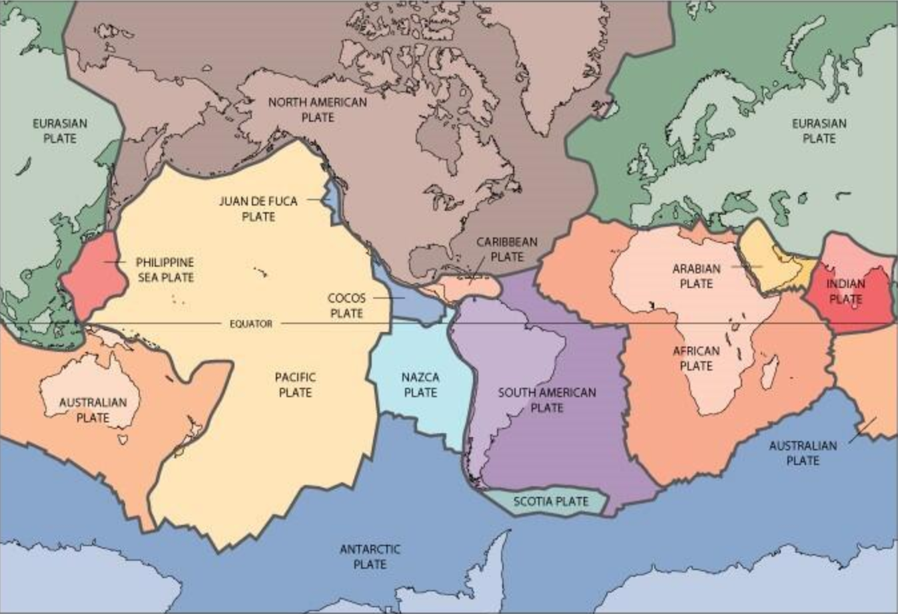

El mapa tectónico mundial
La superficie terrestre está dividida en grandes bloques rocosos que se desplazan lentamente. Su movimiento transforma los continentes, modifica los océanos y participa en la formación de montañas y otras estructuras geológicas.

Las placas tectónicas del mundo
Las placas tectónicas son grandes fragmentos rígidos de la litosfera, la capa externa de la Tierra formada por la corteza y la parte superior rígida del manto. Estas placas se desplazan sobre materiales más calientes y deformables del manto.
La superficie terrestre contiene varias placas principales y numerosas placas menores. Cada una ocupa una región determinada y mantiene contacto con otras a lo largo de sus límites.
Los límites de las placas
Las placas tectónicas están conectadas entre sí formando una estructura global. Sus bordes son zonas de interacción donde las placas se separan, se aproximan o se deslizan lateralmente unas respecto a otras.
Límites divergentes
Se producen cuando dos placas se separan. El material del manto puede ascender y formar nueva corteza, como ocurre en las dorsales oceánicas.
Límites convergentes
Aparecen cuando dos placas se aproximan. Una puede hundirse bajo la otra, proceso llamado subducción, o ambas pueden deformarse y elevar montañas cuando colisionan.
Límites transformantes
Se forman cuando dos placas se deslizan horizontalmente una junto a la otra. Este movimiento puede producir terremotos, como sucede en la falla de San Andrés, en California.
¿De qué están hechas las placas?
Para comprender las placas tectónicas es necesario distinguir la corteza terrestre de la litosfera. La corteza es la capa rocosa más externa; la litosfera incluye esa corteza y la parte superior rígida del manto.
Corteza continental
Forma los continentes y suele ser más gruesa y menos densa que la corteza oceánica. Su composición es variada y muchas de sus rocas tienen una larga historia geológica.
Corteza oceánica
Forma gran parte del fondo de los océanos. Generalmente es más delgada y densa que la corteza continental, y se renueva principalmente en las dorsales oceánicas.
El manto superior rígido
La parte superior rígida del manto está unida a la corteza y forma parte de la litosfera. Por debajo se encuentra la astenosfera, una región más deformable sobre la que se desplazan las placas a lo largo del tiempo geológico.